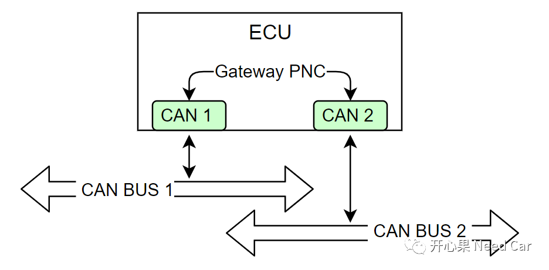
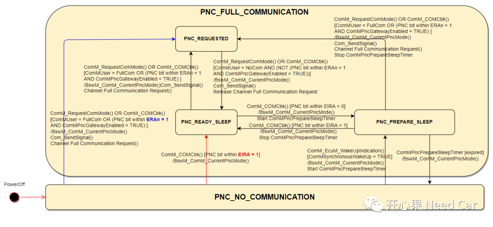
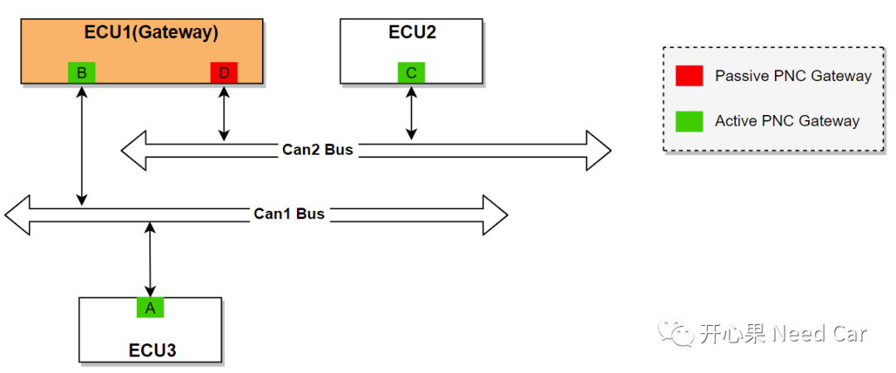

开心果 Need Car · 2022-07-30T08:17:00+08:00 · 微信原文
网络管理中，主动唤醒源/被动唤醒源与网络主动唤醒/被动唤醒的关系有时让人傻傻分不清，本文侃侃这几个名词。
提示：基于CAN节点讨论。
主动唤醒源：承担着主动唤醒网络责任的唤醒源，称为主动唤醒源。比如：KL15硬线，User请求，ERA信号等。
KL15硬线：通过KL15硬线方式唤醒网络，说明当前网络没有节点参与通信，为了快速将网络唤醒，建立通信功能，被KL15硬线唤醒的节点，需要主动地去唤醒网络，进而将网络上其他节点唤醒。所以，可以将KL15硬线看作主动唤醒源。同理，类似于KL15硬线唤醒网络的其他硬线唤醒方式，也可以看作主动唤醒源；
User请求：User请求，是指通过ComM_RequestComMode()接口请求通信的方式，发起点为SWC，由于功能需要，节点需要在某些工况下主动拉起其他节点通信；
ERA信号：ERA信号怎么看作是主动唤醒源呢？首先，ERA信号的使用，说明当前节点有多个物理Channel(ComM的Channel与之一一对应)，PNC信息需要在不同的Channel之间路由，以实现不同网络唤醒的目的。
比如：CAN 1在CAN BUS 1上收到一帧网络管理报文，包含PNC #n = 1，且PNC #n与CAN1和CAN2均关联，PNC #n需要由CAN1路由到CAN2，CAN BUS2网段内可能节点均没有唤醒，需要有节点承担唤醒CAN BUS2 网络的责任，即：主动唤醒CAN BUS2网段内的节点。此时，路由到CAN 2节点的ERA信号就可以充当主动唤醒CAN BUS2上节点的责任，所以ERA信号可以看作主动唤醒源。

除了上述的的主动唤醒源，还有一些定时器、传感器也可以作为主动唤醒源。传感器一般与硬线连接，类似于KL15硬线。定时器的使用场景不清楚大家有没有遇到，这里给一个场景：智能补电。如果车辆长时间处于休眠状态，蓄电池可能亏电，亏电会导致车辆无法正常使用。为了防止蓄电池亏电，有些车上会配置智能补电功能，通过定时器设置定时时间，如果此时间内车辆未有启动，则定时器主动触发对应节点的唤醒，对蓄电池进行补电。
被动唤醒源：不需要承担唤醒网络责任的唤醒源，称为被动唤醒源。比如：收到NM Msg。对于收到NM Msg需要分情况讨论：
网络管理没有PN功能：节点收到的网络管理报文没有PNC信息，此时网络管理报文看作被动唤醒源。
问题拓展思考
对于PNC模式的切换，群内小伙伴提出了这样一个问题："ERA = 1时，PNC由PNC_NO_COMMUNICATION切换到PNC_REQUESTED。而EIRA = 1时，PNC由PNC_NO_COMMUNICATION切换到PNC_READY_SLEEP"，两者为什么不同呢？


往期精彩回顾